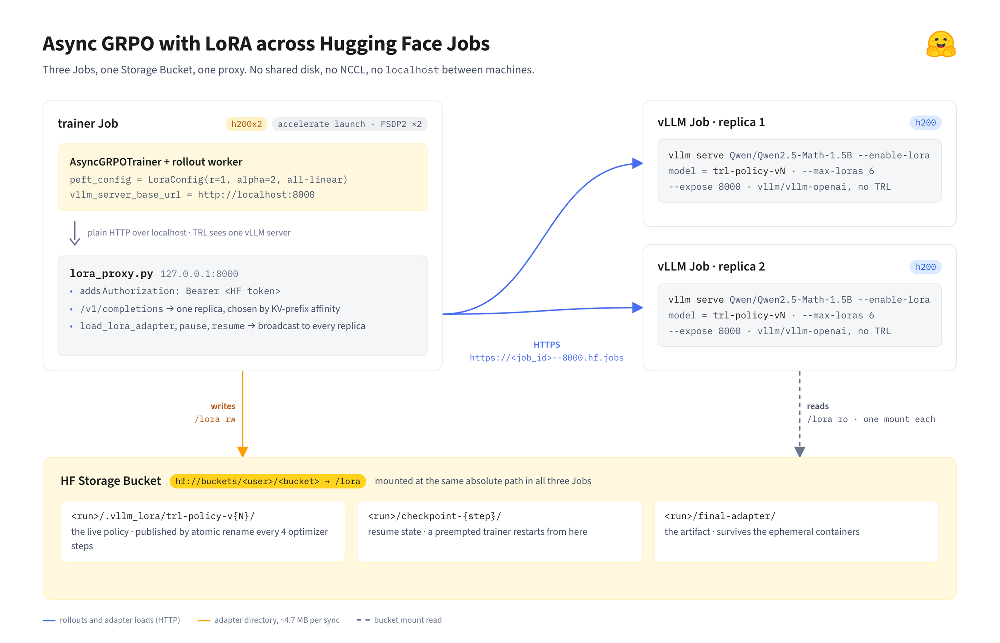
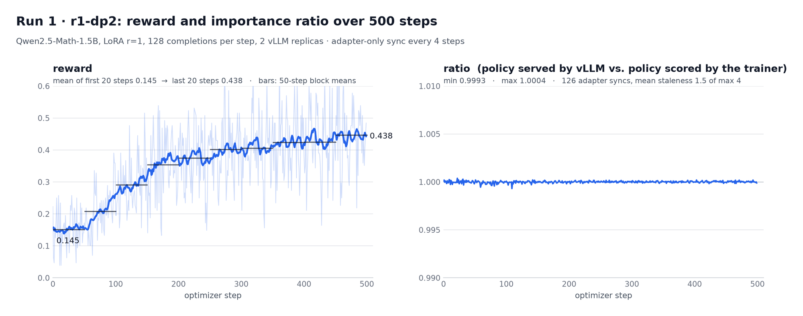
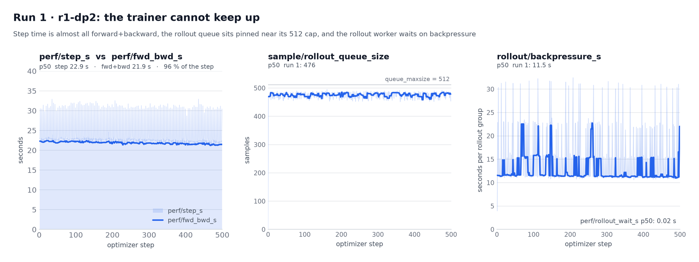
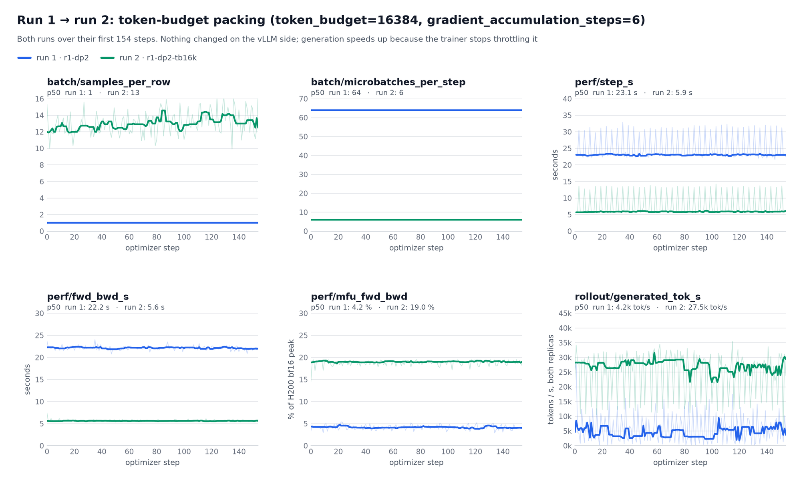
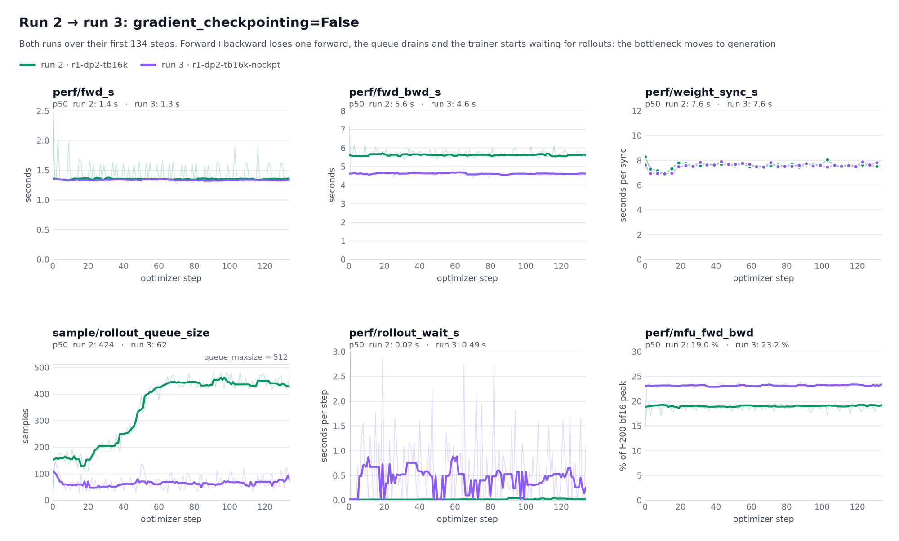
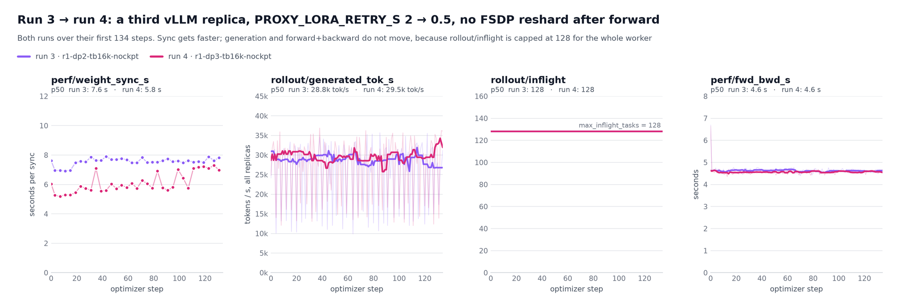
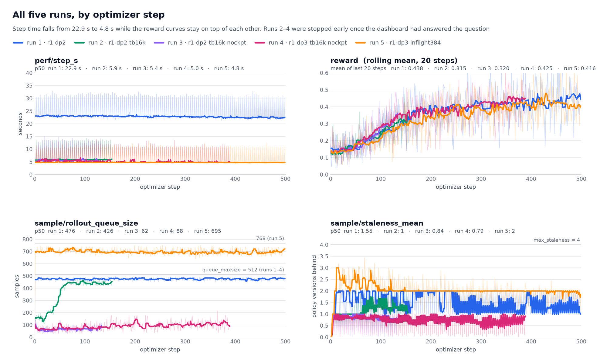
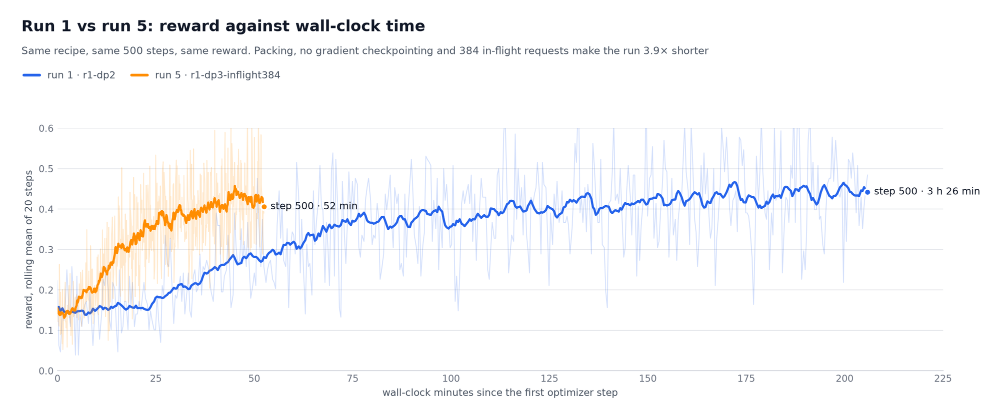

文章背景与核心概要
在大语言模型推理能力对齐与强化学习 (Reinforcement Learning, RL) 探索中，群体相对策略优化 (Group Relative Policy Optimization, GRPO) 已成为提升模型复杂推理能力的关键方法，但传统的分布式多节点训练往往严重依赖昂贵且配置繁琐的 NCCL 高速互联网络与跨节点共享文件系统。针对这一工程痛点，本文介绍了一种轻量优雅的分布式解耦训练方案：结合 TRL 库最新支持的 AsyncGRPOTrainer 与低秩适应 (Low-Rank Adaptation, LoRA) 技术，在相互网络隔离的 Hugging Face Jobs 容器环境中开展异步强化学习。利用仅数兆字节大小的 Rank-1 权重只需通过挂载的云端对象存储桶 (Storage Bucket) 进行同步，配合定制的反向代理服务器实现基于 KV 缓存前缀的智能路由与状态广播，彻底摆脱了复杂的跨节点 NCCL 通信依赖。通过进一步优化微批次打包、禁用梯度检查点并增大并发在飞请求上限，训练耗时从 3 小时 27 分钟大幅缩短至 53 分钟，获得了高达 3.9 倍的速度提升。
基于 LoRA 与 HF Jobs 的异步 GRPO 训练：对象存储、代理与零 NCCL 实践
Async GRPO with LoRA across HF Jobs: A Bucket, a Proxy, and No NCCL
核心概要
Summary
本文探讨了如何借助 AsyncGRPOTrainer 与 LoRA (Low-Rank Adaptation) 低秩适应技术，在分布式 Hugging Face Jobs 之间运行异步强化学习 (Reinforcement Learning, RL) 训练，且全程无需依赖跨节点的共享网络文件系统或复杂的 NCCL 集群通信。
This article explores how to run asynchronous Reinforcement Learning (RL) training via AsyncGRPOTrainer using LoRA (Low-Rank Adaptation) across distributed Hugging Face Jobs without relying on a shared network file system or NCCL.
本文的核心亮点包括： - 轻量级权重同步：由于 Rank-1 的 LoRA 适配器仅有区区几兆字节大小，我们可以轻松通过各个独立 Job 间挂载的对象存储桶 (Storage Bucket) 进行文件同步，从而完全避开繁重的多节点网络直接通信。 - 代理路由与状态广播：通过一个定制的代理服务器统一处理认证请求头，将生成采样任务 (Rollouts) 智能路由到匹配其 KV 缓存 (KV-cache) 前缀的副本节点，并将最新的适配器更新广播同步给所有副本。 - 显著的性能飞跃：通过精细调优训练微批次 (Microbatches)、关闭梯度检查点 (Gradient Checkpointing) 并提高在飞请求 (In-flight) 上限，500 步的整体训练时间从 3 小时 27 分钟锐减至 53 分钟（取得了高达 3.9 倍的加速比）。
Key highlights include: - Lightweight Synchronization: Because rank-1 LoRA adapters are only a few megabytes, they can easily sync via a Storage Bucket mounted across separate jobs, avoiding heavy multi-node communication. - Proxy Routing & Broadcasting: A custom proxy server handles authentication headers, routes rollouts to replicas matching their KV-cache prefix, and broadcasts adapter updates to all replicas. - Performance Gains: By tweaking training microbatches, disabling gradient checkpointing, and raising in-flight limits, training time for 500 steps drops from 3 hours 27 minutes down to 53 minutes (a 3.9× speedup).
背景引言
Introduction
随着 PR #7017 的合并（并在 TRL v1.14 版本中正式发布），TRL 库的 AsyncGRPOTrainer 迎来了对 LoRA 的原生支持。现在的异步训练器可以只针对轻量级 LoRA 适配器展开训练，无需更新完整模型，并且仅需将适配器参数实时同步到 vLLM 推理引擎中。本文将详细介绍一个基于该特性搭建的真实工程项目，在该项目中，模型的训练与推理彻底解耦，不再共享同一台物理机。
LoRA support recently landed in TRL's
AsyncGRPOTrainerwith PR #7017 (shipped in TRL v1.14). The asynchronous trainer can now train a LoRA adapter instead of the full model, syncing only the adapter to vLLM. This post covers a real-world project built on top of it, where training and inference no longer share a machine.
LoRA 训练在强化学习场景中表现出奇契合。正如 Thinking Machines 在其博文 LoRA Without Regret 中所揭示的，在基于策略梯度的强化学习中，哪怕仅使用 Rank 1 的 LoRA，其效果也能与全量微调 (Full Fine-Tuning) 旗鼓相当。背后的数学机理在于：每个回合中优势函数 (Advantage Function) 仅能提供大约 ~O(1) 比特的信息增益，因此极低秩的 Rank-1 适配器便具备足够的容量去吸收并掌握这些信号。
LoRA training is particularly suited for RL, as shown in Thinking Machines's blog LoRA Without Regret. They demonstrate that LoRA can match full fine-tuning for policy-gradient RL, even with rank 1. This stems from the fact that the advantage function only gives
~O(1)bits of information per episode, so a rank-1 adapter has enough capacity to absorb it.
从分布式系统工程的视角来看，一个 1.5B 参数量模型的 Rank-1 适配器文件仅有区区几兆字节，而完整模型权重则高达约 3 GB。我们无需在每次迭代后传输庞大的完整模型权重，仅需分发极小的适配器即可。此外，vLLM 支持同时在显存中保留多个 LoRA 适配器：旧的生成采样任务可以使用其启动时对应的旧策略从容执行完毕，而全新的采样任务则能无缝切换并使用最新的策略权重。
From a systems perspective, a rank-1 adapter for a 1.5B model is a few megabytes, whereas the full model is ~3 GB. Instead of sending full weights after every update, we send just the adapter. Furthermore, vLLM can keep several adapters loaded at once: old rollouts finish with the policy they started with, while new rollouts use the latest one.
分布式训练面临的挑战
The Challenge of Distributed Training
TRL 的 AsyncGRPOTrainer 将模型训练与样本生成解耦，使得两者能够在独立的计算节点上以不同的速率并行运转。然而，当我们尝试在 Hugging Face Jobs 上落地这一架构时（在该平台上，每个 Job 都是运行在独立虚拟机内的单容器），意味着容器之间既没有共享本地磁盘，也无法通过本地网络 localhost 或预先配置好的多机通信库 NCCL 互通。
TRL's
AsyncGRPOTrainerseparates training and generation so they can run on separate machines and speeds. However, doing this with Hugging Face Jobs—where each Job is a single container on a single VM—means no shared local disk and no sharedlocalhostor NCCL group across nodes.
如果采用全量权重同步机制，这种无直接内网互联的环境根本无法扩展。但有了 LoRA 之后，每次需要同步的数据量变得极其轻量。HF Jobs 支持挂载由对象存储桶 (Storage Buckets) 支持的数据卷，通过 FUSE 文件系统挂载到每个 Job 的容器内。这样一来，它就扮演了跨节点共享文件系统的角色，甚至完全不需要在计算节点间建立直接的底层网络通道。
With full-weight sync, this setup wouldn't scale. With LoRA, however, the sync data is tiny. HF Jobs provide volumes backed by Storage Buckets that can be mounted as a FUSE filesystem in every Job, serving as a shared filesystem across nodes with zero direct network path required.
我们的整体系统架构由以下几个核心部分组成：
1. 一个运行 AsyncGRPOTrainer 的训练器 Job (Trainer Job)，结合了 LoRA 与 FSDP (Fully Sharded Data Parallel) 技术。
2. 两个 vLLM 推理 Job (vLLM Jobs)，各自对外提供基座模型及最新 LoRA 适配器的推理服务。
3. 一个统一挂载在所有三个 Job 中相同路径下的对象存储桶 (Storage Bucket)。
4. 一个轻量级的反向代理服务器 (Proxy Server)，负责将采样生成请求精准路由给 KV 缓存前缀匹配度最高的推理副本，并向所有推理副本广播最新的适配器加载指令。
Our architecture consists of: 1. A trainer Job running
AsyncGRPOTrainerwith LoRA and FSDP. 2. Two vLLM Jobs, each serving the base model plus the latest adapter. 3. A Storage Bucket mounted in all three jobs at the same path. 4. A proxy server that routes rollouts to replicas matching their KV prefix and broadcasts adapter loads.
架构解析：深度融合 Hugging Face Jobs 与对象存储桶 🪣
The Architecture: Leveraging Hugging Face Jobs and Storage Buckets 🪣
纯适配器的同步链路运行机制如下：每隔指定的优化器迭代步数，训练器就会将当前最新的 LoRA 适配器保存到 <output_dir>/.vllm_lora/trl-policy-v{N} 目录下，通过原子重命名操作完成安全发布，随后将其文件路径发送给 vLLM 的 /v1/load_lora_adapter 端点。vLLM 直接从本地挂载的磁盘读取这些文件，此后各生成采样工作节点便能指定请求 model="trl-policy-v{N}"。
The adapter-only sync path works as follows: every few optimizer steps, the trainer saves the adapter under
<output_dir>/.vllm_lora/trl-policy-v{N}, publishes it via an atomic rename, and sends its path to vLLM's/v1/load_lora_adapterendpoint. vLLM loads the files from disk, allowing rollout workers to requestmodel="trl-policy-v{N}".
通过借助 hf-mount 工具，在每一个 Job 中将对象存储桶 (Storage Bucket) 作为数据卷挂载到完全相同的绝对路径下：
By mounting a Storage Bucket as a volume using
hf-mountat the exact same path in every Job:
# every Job gets the same bucket at the same absolute path
hf jobs run ... -v hf://buckets/aminediroHF/asyncgrpo-lora-buckets:/lora ...
训练器直接将权重写入 /lora/<run>/.vllm_lora/，而各推理服务器则能从相同的本地路径直接读取，天然透明。
The trainer writes to
/lora/<run>/.vllm_lora/and servers read from the same path natively.

训练检查点 (Checkpoints) 以及最终训练产出的适配器也统一保存在该存储桶中，从而确保即便是使用低成本抢占式实例 (Spot Instances)，任务被中断打断后也能安全无缝地恢复状态继续执行。
Checkpoints and the final adapter are also stored in the bucket, ensuring that ephemeral jobs can be safely preempted and resumed.
三大核心任务构建细节
The Three Jobs
vLLM 推理副本
The vLLM Replicas
每个推理副本占用单张 GPU 并直接基于官方镜像 vllm/vllm-openai 运行，开启运行时动态加载 LoRA 权重功能，并预留充足的适配器显存槽位 (Adapter Slots)。
Each replica uses a single GPU and the stock
vllm/vllm-openaiimage, enabling runtime LoRA loading and reserving enough adapter slots.
所需要预留的适配器槽位数量取决于最大陈旧度参数 max_staleness。例如，当设置 max_staleness=4 时，当训练器推进到 v7 版本时，此前在 trl-policy-v3 策略下生成的样本仍可能正在用于训练计算。因此，vLLM 必须在显存中同时保留当前最新策略及其之前的 4 个历史版本，再加上热更新切换时所需预留的 1 个额外缓冲槽位，总共需要配置 --max-loras 6。
The number of adapter slots depends on
max_staleness. Withmax_staleness=4, a sample generated undertrl-policy-v3is still used for training while the trainer is atv7. vLLM must serve the current policy plus the four before it, plus one extra slot during the swap, requiring--max-loras 6.
# --expose 8000 reachable at https://<job_id>--8000.hf.jobs
# -v ...:/lora:ro read-only: the server only reads adapters
# VLLM_ALLOW_RUNTIME_LORA_UPDATING=1 enables /v1/load_lora_adapter
# VLLM_SERVER_DEV_MODE=1 enables /pause, /resume, /server_info (TRL needs all three)
# --max-loras 6 max_staleness=4 -> 4+2 adapter slots
for replica in 1 2; do
hf jobs run --detach --flavor h200 --timeout 8h --secrets HF_TOKEN \
--expose 8000 \
-v "hf://buckets/${BUCKET}:/lora:ro" \
-e VLLM_ALLOW_RUNTIME_LORA_UPDATING=1 \
-e VLLM_SERVER_DEV_MODE=1 \
-- vllm/vllm-openai:v0.27.1 \
vllm serve Qwen/Qwen2.5-Math-1.5B --host 0.0.0.0 --port 8000 \
--max-model-len 4096 --logprobs-mode processed_logprobs --generation-config vllm \
--enable-lora --max-lora-rank 1 --max-loras 6
done
数据集选择：合理性验证集 (Sanity Set)
The Dataset Choice: The Sanity Set
我们选用了来自论文《通过 FP16 消除训练与推理不匹配》(Defeating the Training-Inference Mismatch via FP16, Qi et al., 2025) 中的数据集 sail/Sanity-Test-R1D-1.5B。该数据集收录了 1,460 道解题成功率在 20% 到 80% 之间的数学题目，能在 2 小时以内完整跑完一轮迭代，是进行快速验证测试的理想基准。
We used
sail/Sanity-Test-R1D-1.5Bfrom Defeating the Training-Inference Mismatch via FP16 (Qi et al., 2025). Containing 1,460 math problems with success rates between 20% and 80%, it offers an ideal validation benchmark that can be cycled through in under two hours.
训练器 (Trainer)
The Trainer
训练脚本配置并初始化了带有 LoRA 设置的 AsyncGRPOTrainer：
The trainer script initializes
AsyncGRPOTrainerwith LoRA configuration:
from peft import LoraConfig
from trl.experimental.async_grpo import AsyncGRPOConfig, AsyncGRPOTrainer
config = AsyncGRPOConfig(
output_dir="/lora/sanity-lora-r1", # on the bucket: adapters, checkpoints and the final adapter all land here
vllm_server_base_url="http://localhost:8000", # the proxy, not a vLLM Job; TRL never sees the Jobs URLs
max_staleness=4,
weight_sync_steps=4, # publish an adapter every 4 optimizer steps
save_strategy="steps", save_steps=50, # checkpoints go to the same bucket -> resume after preemption
...
)
trainer = AsyncGRPOTrainer(
model="Qwen/Qwen2.5-Math-1.5B",
args=config,
peft_config=LoraConfig(r=1, lora_alpha=2, target_modules="all-linear"), # plain LoRA vLLM can serve as-is
...
)
代理服务器 (Proxy)
The Proxy
在训练器与各 vLLM 推理 Job 之间引入代理服务器是基于以下两点刚性诉求：
1. HF Jobs 暴露的对外服务端口需要附带 Authorization: Bearer <HF token> 身份验证头。
2. 我们希望实现多 GPU 并行生成采样，同时避免触发 vLLM 内部复杂的数据并行 (Data Parallel) 约束。
A proxy between the trainer and the vLLM Jobs is required because: 1. Exposed Job ports require an
Authorization: Bearer <HF token>header. 2. We want multi-GPU generation without triggering vLLM's internal data-parallel constraints.
该代理直接运行在训练器 Job 本地的 127.0.0.1:8000。它的核心职责包括：
- 将每个采样生成请求智能路由到最可能命中并持有其 KV 缓存的副本节点上。
- 将改变状态的操作指令（如适配器加载、暂停推理、恢复推理）广播分发到所有推理副本。
The proxy runs locally at
127.0.0.1:8000on the trainer Job. It: - Routes each rollout request to the replica most likely to hold its KV cache. - Broadcasts state-changing requests (adapter loads, pause, resume) to all replicas.
基于 KV 前缀的采样请求路由
Routing Rollouts by KV Prefix
路由器通过以适配器名称为种子构建 16 个 Token 的分块哈希链。在评估采样请求时，它会比对匹配的前缀长度，兼顾通用的系统提示词 (System Prompt) 与模板，将请求分派给命中率最高的最优副本（若目标副本当前过载，则会自动溢出分流到当前负载最低的副本）。
The router chains 16-token block hashes seeded with the adapter name. When evaluating requests, it compares matching prefix lengths, accounts for common system prompts/templates, and assigns the request to the best-suited replica (or spills it to the least-loaded one if the target replica is overwhelmed).
async def load_one(u):
while True:
status, _, out = await send(u, "POST", "/v1/load_lora_adapter", headers, body)
if status == 200 or "No adapter found" not in out.decode() or time.monotonic() > deadline:
return u, status, out
await asyncio.sleep(cfg.lora_retry_s) # this replica's mount has not seen the directory yet
results = await asyncio.gather(*(load_one(u) for u in ups))
if any(st != 200 for _, st, _ in results):
await asyncio.gather(*(send(u, "POST", "/v1/unload_lora_adapter", headers, unload) for u, st, _ in results if st == 200))
return web.Response(status=504 if timed_out else st, text="rolled back on the others")
全流程运行实验结果
Full Run Results
权重同步效率
Weight Sync
- 完整同步耗时：中位数 (p50) 仅为 8.5 秒
- 适配器保存至存储桶：1.1 秒
- 推理副本加载适配器：约 7 秒
- 同步成功率：在累计 252 次适配器加载中达成 100% 成功率
- Whole sync time: 8.5 s (p50)
- Adapter save to bucket: 1.1 s
- Replica adapter acceptance: ~7 s
- Success rate: 100% across 252 adapter loads.
路由命中表现
Routing Performance
- 亲和性命中率 (Affinity Hits)：84.5%
- 过载分流率 (Spills)：1.3%
- 未命中/冷启动 (Cold)：14.2%
- Affinity Hits: 84.5%
- Spills: 1.3%
- Unmatched (Cold): 14.2%
奖励演进趋势
Reward Progression
平均奖励得分 (Mean Reward) 从前 20 步的 0.145 稳步攀升至最后 20 步的 0.438。在全部 126 次权重同步过程中，策略比率 (Policy Ratio) 始终稳定保持在 0.9993 到 1.0004 这一极小波动范围内。
Mean reward climbed from 0.145 over the first 20 steps to 0.438 over the last 20 steps. The policy ratio remained stable between
0.9993and1.0004throughout all 126 syncs.
追寻“乒乓瓶颈”：全链路渐进式调优
Chasing the Bottleneck Ping-Pong
通过深入分析 perf/rollout_wait_s（生成等待耗时）、rollout/backpressure_s（生成背压耗时）以及队列占用率等系统指标，我们在 5 次循序渐进的实验迭代中逐步完成了流水线调优：
By analyzing metrics like
perf/rollout_wait_s,rollout/backpressure_s, and queue occupancy, we optimized our pipeline across 5 progressive runs:
| 指标 / 参数 | Run 1 (r1-dp2) |
Run 5 (r1-dp3-inflight384) |
|---|---|---|
| 挂钟总时间 (500 步) | 3 小时 27 分钟 | 53 分钟 |
单步耗时 (perf/step_s) |
22.9 秒 | 4.8 秒 |
训练器 MFU (perf/mfu_fwd_bwd) |
3.9% | 23.5% |
| 每步样本量 (Samples per Step) | 128 | 168 |
| 奖励演进区间 | 0.145 → 0.438 | 0.145 → 0.416 |
Metric / Parameter Run 1 ( r1-dp2)Run 5 ( r1-dp3-inflight384)Wall Clock (500 steps) 3 h 27 min 53 min Step Time ( perf/step_s)22.9 s 4.8 s Trainer MFU ( perf/mfu_fwd_bwd)3.9% 23.5% Samples per Step 128 168 Reward Progression 0.145 → 0.438 0.145 → 0.416
r1-dp2。在 500 个迭代步中，奖励从 0.15 攀升至 0.44；ratio 稳定保持在 0.9993 到 1.0004 之间。
{kind=link}
Figure 1. trackio run
r1-dp2. Reward climbs from 0.15 to 0.44 over 500 steps;ratiostays between 0.9993 and 1.0004.
r1-dp2。系统受限于训练端瓶颈。
{kind=link}
Figure 2. trackio run
r1-dp2. Trainer-bound bottleneck.

{kind=link}
Figure 3. Packing microbatches improves MFU and throughput.

{kind=link}
Figure 4. Disabling gradient checkpointing shifts the bottleneck to generation.

{kind=link}
Figure 5. Adding a third replica.

{kind=link}
Figure 6. All five trackio runs overlaid.

{kind=link}
Figure 7. Reward against wall-clock minutes. Run 5 reaches the goal in 52 minutes instead of 3h 26m.
动手实践
Try It
git clone https://github.com/AmineDiro/hfjobs-lora-buckets && cd hfjobs-lora-buckets
hf auth login
MAX_STEPS=20 RUN_TAG=smoke ./run_all.sh --wait # ~15 min, three Jobs, cancels the servers when done
MAX_STEPS=500 ./run_all.sh --wait # run 1: the reference batch shape, ~3.5 h
TOKEN_BUDGET=16384 GRAD_ACCUM=6 GRADIENT_CHECKPOINTING=0 PROXY_LORA_RETRY_S=0.5 \
MAX_INFLIGHT=384 QUEUE_MAXSIZE=768 MAX_STEPS=500 ./run_all.sh --wait # run 5: same recipe, ~55 min
参考文献
References
- John Schulman 等人，LoRA Without Regret，Thinking Machines Lab，2025年9月。
- TRL，
AsyncGRPOTrainer官方技术文档。 - TRL PR #7017：
AsyncGRPOTrainer对 PEFT/LoRA 的支持。 - Hugging Face Jobs 与 Storage Buckets。
- Penghui Qi 等人，Defeating the Training-Inference Mismatch via FP16，arXiv:2510.26788，2025年。
- John Schulman et al., LoRA Without Regret, Thinking Machines Lab, September 2025.
- TRL,
AsyncGRPOTrainerdocumentation.- TRL PR #7017: PEFT/LoRA support for
AsyncGRPOTrainer.- Hugging Face Jobs and Storage Buckets.
- Penghui Qi et al., Defeating the Training-Inference Mismatch via FP16, arXiv:2510.26788, 2025.
@article{qi2025precisionrl,
title={Defeating the Training-Inference Mismatch via FP16},
author={Qi, Penghui and Liu, Zichen and Zhou, Xiangxin and Pang, Tianyu and Du, Chao and Lee, Wee Sun and Lin, Min},
journal={arXiv preprint arXiv:2510.26788},
year={2025}
}